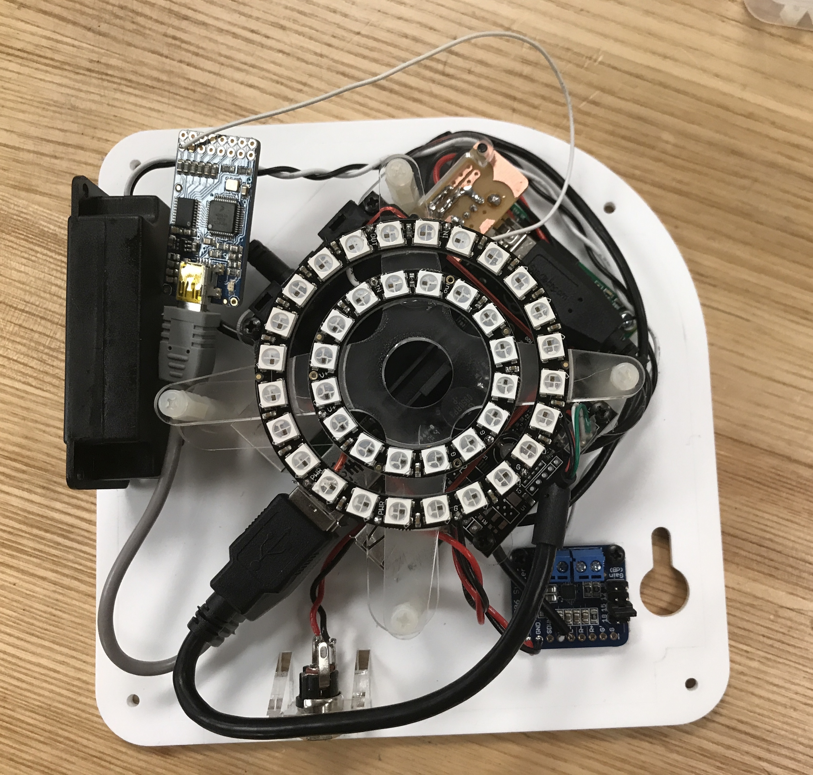
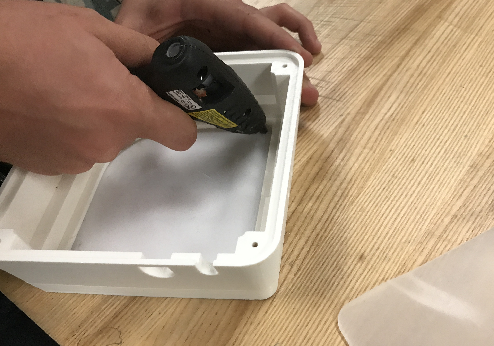
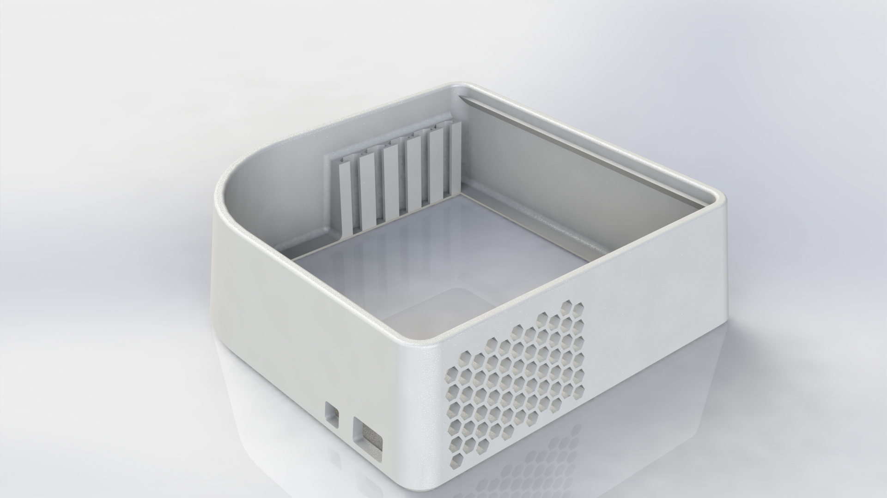
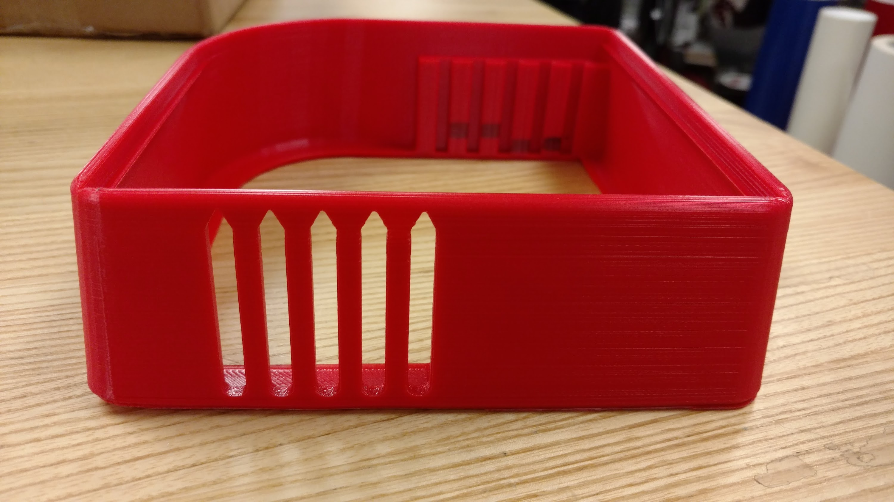
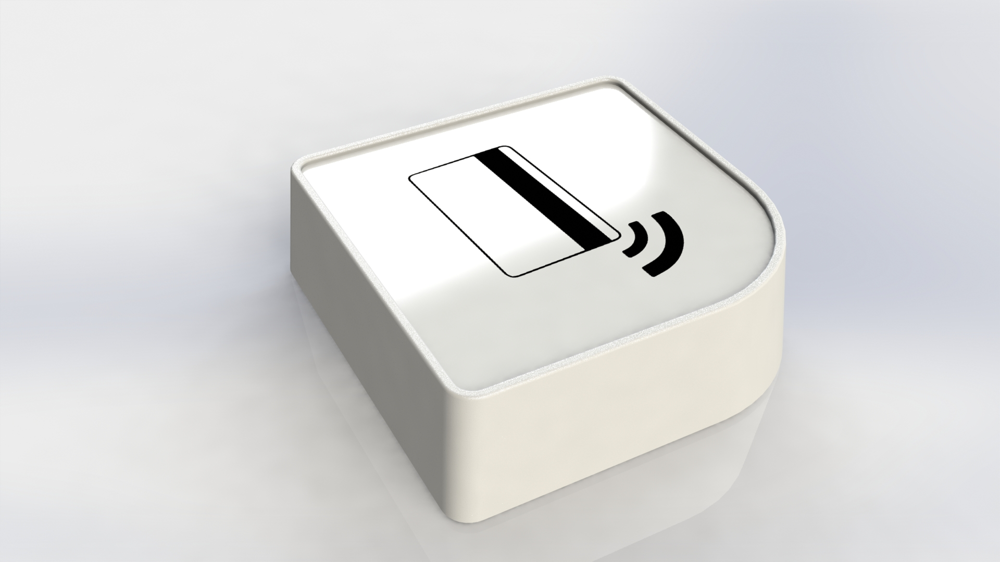
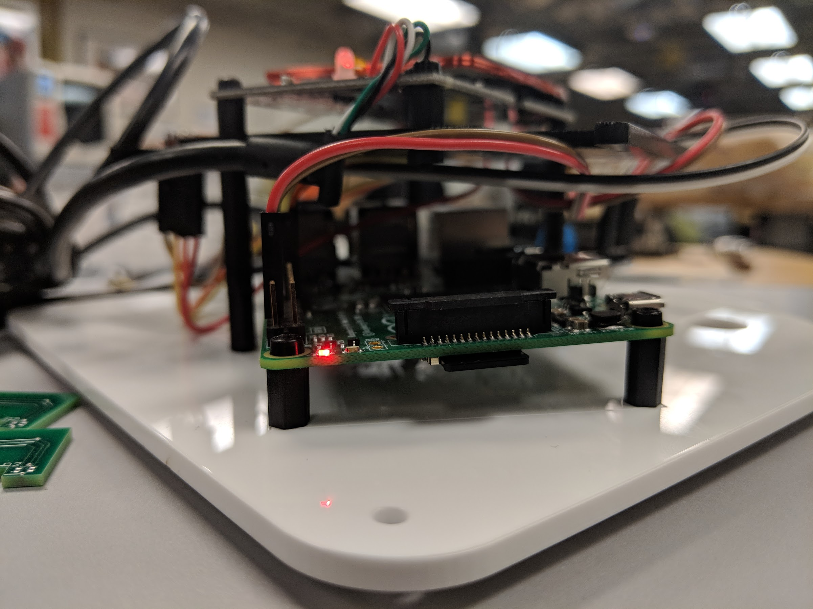
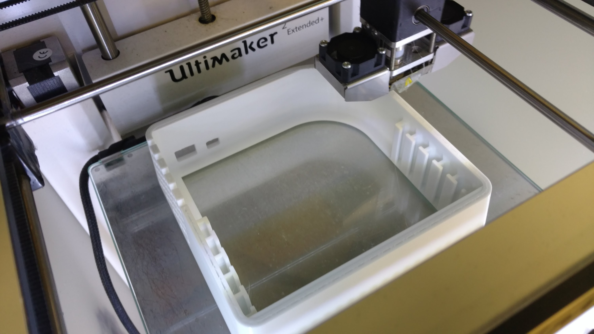

MakerPass Authentication System
Hardware and Industrial Design

My team and I itterated on the MakerPass design to create a low-cost system with a core contribution of ease of assembly and mass production
Team
Mitchell Karchemsky
Eldon Schoop
David Zhang
Roland Saekow
My Role
Systems Analysis
User Interface Design
User Research
Product Design
Electronics Design
Methods
Industrial Design
3D CAD
Electronics Design
The Challenge
Authenticating users for any space is a very difficult task. In a community like the Jacobs Hall Makerspace and the CITRIS Invention Lab, it is imperative for users to be properly trained and authorized to use the equipment and spaces. To solve this problem, Eldon Schoop, Chris Myers, and Björn Hartmann, developed the Makerpass system. This allows for students to use their existing Cal ID (school distributed Identification card) to “badge in” to authenticate their access to the location, or equipment.
Version 1
The first design of the system consisted of a 3d printed case, a laser-cut acrylic mount, a handful of electronic components, and several other miscellaneous items.

This system has been distributed and is actively used in many locations across the UC Berkeley campus. It is currently handling access for over 1000 concurrent users.
Version 1.5
One of the common issues reported by our users was the difficult of “badging-in”, the act of having their ID card scanned by the RFID reader. We concluded that the two main factors which contribute to this is the “similar-frequency” of our LED lighting creating excess electrical noise, and physical distance limiting our sensors range. This can be seen by the red coil of wire at 12 o’clock.
I was brought along to help design the next iteration of the product with several emphases:
- Keep cost as low as possible
- Reduce BOM / components to keep package small
- Minimize assembly overhead such that production and maintenance is as easy as possible.
Case Redesign

One of the largest components we wanted to address was the housing and 3d printed case. The first design utilized many overhanging geometries which required an advanced, professional grade 3d printer with soluble supports. This was the largest barrier to entry as not many makerspaces will support printers with dedicated secondary support print capabilities.
To address this, I redesigned the case that minimizes the necessity of support material.

This new design has only one section of overhangs which are small enough that most if not all consumer-grade 3d printers will be able to bridge the gaps. We reduced the necessity for other hardware with the addition of a “T-Slot” system on the sides. This will allow future versions to create brackets which can hold new components (e.g. speakers).

We decided to keep the acrylic baseplate and top cover, but with two major differences. The baseplate no longer serves as the “grounding” surface for the entire device, that is, the weight of the case is not placed on the acrylic, the case supports itself. The bottom acrylic now only serves as the base for electronic components to stand on. This means that in case of maintenance, a full electronic “board” can be dropped into a case “in-the-wild” limiting downtime.
The second difference is that the top acrylic is no longer required to be sealed in with adhesive. The top adhesive is inserted with a press-fit that keeps it secure.

Electronics Redesign
As well as redesigning the physical enclosure, I was tasked to help reduce the complexity of the electronic design. Specifically with the electronics in the previous iteration, we had many components which were either overpowered, or would introduce more hassle than they would solve.
For example, we wanted to use addressable LED pixels to create lighting effects for user feedback once they have badged in. We originally source “Adafruit Neopixels” which operate on a very specific timing protocol. Although this works very well on other embedded systems, our use of the SoC Raspberry Pi. To use the Neopixels, we had to bring in a second controller powered by USB which would send the precise timing controls to the LED pixels. This controller costs us an extra $25. With this in mind, we switched to dotstars (APA102) modules which allow us to use the SPI protocol, which the Raspberry Pi supports natively.
We also removed the stereo amplifier which was powered through the analog audio output and use the Raspberry Pi’s GPIO pins to create analog audio for the speakers.

Next Steps
The current iteration is to bring in mostly new electronics and keep the low-cost idea to fruition. We also plan on building an even smaller version of the board for more ubiquitous use throughout makerspaces by developing all encompassing boards.
It is important to note that the second iteration described in this write-up is not yet live, but will be live by the end of Summer 2018.

Case Studies
Selected Works

Bifröst
Better Embedded Systems Debugging
Berkeley Institute of Design. How do we better instrument embedded systems for combined software and hardware debugging?
Read Me
Dalmatian
How can we make firefighters safer?
Technology startup focused on creating a safer more effective workforce for firefighters through the use of on-person telemetry units.
Read Me
Heimdall
Remote debugging of embedded systems
Berkeley Institute of Design. How do we enable remote intuitive debugging for teachers to help beginners design embedded systems projects?
Read Me
Wifröst
Wi-Fi Embedded Systems Debugging
Berkeley Institute of Design. How do we use instrumented hardware to better debug network enabled IOT embedded systems?
Read Me
Within2
How do we create music we can feel?
Collaboration with Meyer Sound, The Berkeley Center for New Media, and Artist Tarek Atoui. How do we create music for the hearing impaired?
Read Me
MakerPass
Hardware and Industrial Design
The MakerPass Authentication system allows for Maker-spaces to grant access to privilaged members in a low-cost, easy to implement solution.
Read Me
Doom Sense
How can we feel information?
An experiment in haptic feedback modalities and sensory extension. We improved the performance of a player by delivering curated contextual information
Read Me
Drill Sergeant
Hardware and Industrial Design
Berkeley Institute of Design. Drill Sergeant enables new makers to build confidence through self-guided interactive physical feedback driven tutorials.
Read Me
Strands
How can we feel information?
An experiment in haptic feedback and sound generation; allowing performers to explore timbre, pitch, and volume through physical interaction
Read MeTeaching Experience
Courses and Mentorship

Critical Practices
Teaching Assistant
A hands-on, studio design course where students work at the intersection of technological innovation and socially engaged art.
Read Me
Design Innovation 22
Teaching Assistant
This introductory design course teaches concepts, skills, and methods required to design, prototype, and fabricate physical objects.
Read Me
Invention Lab
Technical Design Mentor
The Invention Lab is a UC Berkeley makerspace focused on helping students, researchers, and faculty to make embedded systems inventions.
Read Me